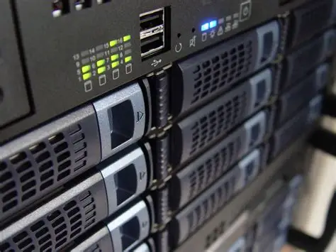
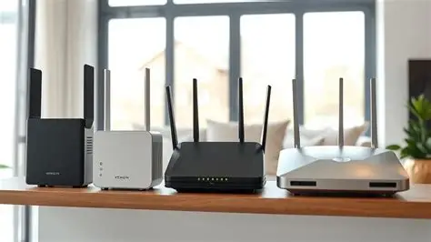
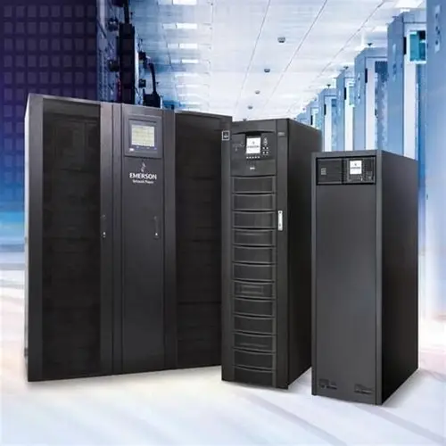
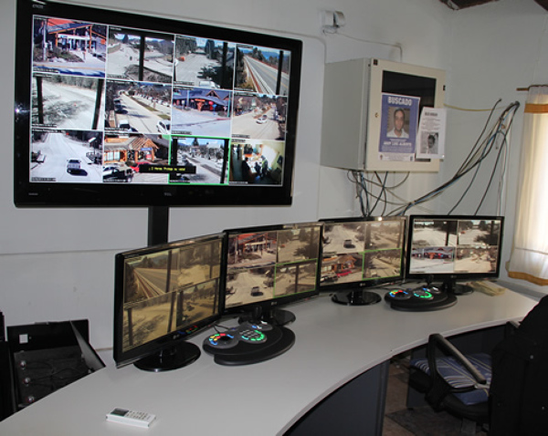

Nuestros Equipos
En esta sección se presenta el equipamiento utilizado por DDD para el almacenamiento, procesamiento, administración y protección de la información. Los recursos detallados a continuación forman parte de la infraestructura tecnológica empleada para garantizar el correcto funcionamiento de los servicios y sistemas de datos.

Servidores
• 4 servidores de procesamiento de datos (256 GB de memoria RAM cada uno).
• 2 servidores dedicados a bases de datos.
• 1 servidor NAS destinado al almacenamiento y respaldo de información.

Red y Seguridad
• 2 routers de borde para conectividad externa.
• 2 conversores de fibra óptica.
• 2 switches core de 10 Gbps.
• 2 firewalls físicos para protección perimetral.
• Patch panels para administración del cableado.

Energía
• 2 UPS online con bancos de baterías.
• PDUs inteligentes para distribución eléctrica.
• 2 equipos de aire acondicionado de precisión.
Seguridad Física
• Sistema de control de acceso biométrico mediante huella y tarjeta.
• Central de alarmas con sensores de humo e inundación.
• 10 cámaras CCTV para monitoreo y vigilancia.

Sala de Administración
• 4 estaciones de trabajo de alto rendimiento.
• 8 monitores de 24 pulgadas.
• 1 switch de acceso de 24 puertos.
Resto del Equipo
• 10 computadoras portátiles corporativas (32 GB RAM c/u).
• 1 punto de acceso Wi-Fi empresarial.